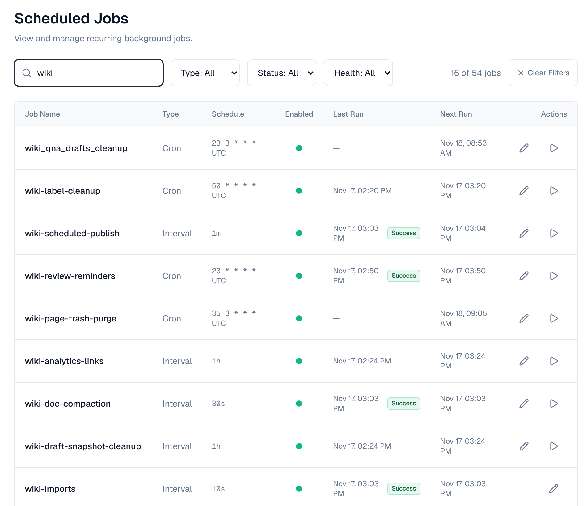
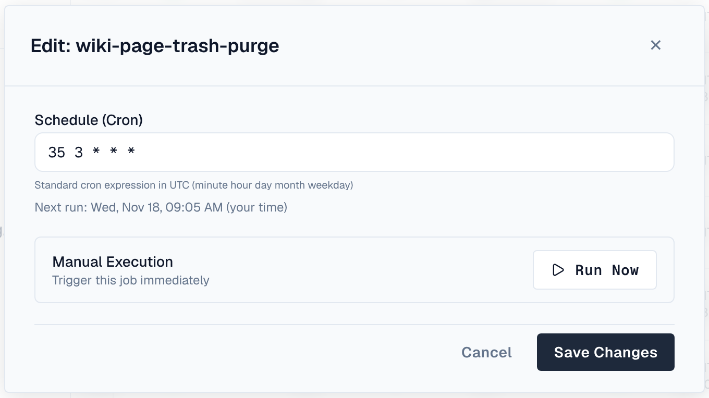

1. Overview
The Wiki runs recurring work in the background with a built-in scheduler: publishing drafts at the time someone chose, reminding reviewers, emptying the trash, building analytics, sending email, delivering events and cleaning up. Administrators see every job, change its schedule, switch some off and run them by hand.
Go to Settings → Advanced → Scheduled jobs. You need scheduler:read to see jobs and scheduler:write to change or run them (super admins have both).

2. The job list
| Column | Description |
|---|---|
| Name | The job's unique name |
| Status | Enabled or Disabled: whether it runs on schedule |
| Schedule | When it runs: a cron expression in UTC (marked UTC) or an interval such as every minute |
| Last run | When it last ran and whether it succeeded |
| Next run | When it will run next, in your own time zone |
| Health | Green (healthy), yellow (failed recently), red (failed several times in a row) |
Each run is recorded as Success, Failure, Timeout (it ran past its time limit and was cancelled) or Skipped (a plugin or policy skipped it, or it was already running).
3. Change a job
What you can change depends on the job (see the tables below):
- Schedule: select the pencil next to the schedule, enter a cron expression (in UTC) or an interval, check Next run (shown in your time zone under the field) and select Save changes. It takes effect at once, without a restart.
- Parameters: some jobs have settings such as how many days to keep something. Open the job, select Edit parameters, change the values (each has a description and a range) and Save. They apply from the next run.
- On or off: jobs that can be switched off have a switch next to their name. A disabled job stays listed and runs again once switched on. Some jobs can't be switched off.
- Run now: runs the job at once with its current parameters. If it's already running on another server, the run is refused with a conflict.
| Cron expression | Meaning |
|---|---|
| 0 * * * * | Every hour at minute 0 |
| 30 3 * * * | Daily at 03:30 UTC |
| 0 0 * * 0 | Sundays at midnight UTC |
| 0 */6 * * * | Every 6 hours |
| 0 9 * * 1-5 | Weekdays at 09:00 UTC |
Cron schedules are in UTC on every server. Last and next run times are shown in your own time zone, so 0 8 * * * reads 13:30 for someone in India.

4. Run history
Open a job and select Run history. Each run shows when it started, how long it took, its status, the server that ran it, the attempt, the error of a failed run and the parameters it used. History is kept for 30 days, and at least the last 50 runs of each job are always kept.
Jobs that run every few seconds or every minute (such as wiki-scheduled-publish, mail-dispatch and event-dispatch) keep only failed and timed-out runs in their history, and the history panel says so. Their successful runs still update Last run in the list.
5. Wiki jobs
Every wiki job runs once per cluster. Times are UTC.
| Job | Schedule | What it does | You can |
|---|---|---|---|
| wiki-scheduled-publish | Every minute | Publishes drafts whose scheduled publish time has come, as the person who scheduled them, while that person is still active and still edits the space. A publish that can never succeed drops the schedule and tells them; a passing failure is tried again | Run now |
| wiki-review-reminders | Hourly at :20 | Reminds reviewers once when the date a review was asked for has passed | Change schedule, run now |
| wiki-review-by-reminders | Hourly at :25 | Tells the person who set a page's review-by date, once, when that date has passed | Change schedule, run now |
| wiki-page-trash-purge | Daily at 03:35 | Removes pages that have been in a space's trash for more than 30 days, for good | Change schedule, run now |
| wiki-draft-snapshots | Every minute | Saves a snapshot of drafts that changed, for a page's draft history (once a draft has been idle for 2 minutes, or every 10 minutes while people keep editing) | Run now |
| wiki-draft-snapshot-cleanup | Every hour | Deletes draft snapshots older than 30 days | Run now |
| wiki-doc-compaction | Every 30 seconds | Merges the edits stored for each page document, so pages open quickly | Run now |
| wiki-attachment-file-cleanup | Every 10 minutes | Deletes the files of deleted attachments from storage. A file that can't be deleted yet stays queued and is tried again | Run now |
| wiki-label-cleanup | Hourly at :50 | Removes labels that no page has carried for a day | Change schedule, run now |
| wiki-imports | Every 10 seconds | Runs the next steps of imports in progress (each run at most an hour) | Nothing (always on) |
| wiki-analytics-rollup | Every 15 minutes | Builds the daily page and space numbers analytics shows | Run now |
| wiki-analytics-links | Every hour | Reads the links of published pages, for the broken links report | Run now |
| wiki-analytics-retention | Daily at 02:45 | Deletes raw page views after 90 days, who read what after 25 months, and searches that found nothing after 90 days. The daily numbers are kept | Change schedule, run now |
| wiki_qna_reputation | Every 15 minutes | Recomputes people's Q&A reputation | Change schedule, run now |
| wiki_qna_drafts_cleanup | Daily at 03:23 | Deletes answer drafts nobody changed for 30 days | Change schedule, run now |
| wiki_qna_images_cleanup | Every 10 minutes | Deletes question and answer images no post has shown for 31 days, and the files of deleted images | Run now |
6. Kee jobs
Jobs of Kee, the Wiki's AI. They run whether or not Kee is on, and find nothing to do while it has never been used.
| Job | Schedule | What it does | You can |
|---|---|---|---|
| wiki-ai-conversation-cleanup | Daily at 03:17 | Deletes Ask Kee conversations idle longer than their retention (30 days by default) and feedback older than 13 months | Change schedule, run now |
| wiki-ai-summary-cleanup | Daily at 03:37 | Deletes page summaries of versions that have a newer one | Switch off, change schedule, run now |
| wiki-outside-apps-cleanup | Daily at 03:41 | Deletes outside AI app usage counts and unused connections older than 13 months, and retry keys older than a day | Change schedule, run now |
| wiki-ai-stale-pages | Mondays at 06:00 | Starts the stale page finder in the spaces that turned it on. Does nothing while it is off | Change schedule, run now |
| wiki-ai-help-continue | Every 2 minutes | Carries on a stale page finder run in batches, and makes suggestions for new questions. Stops at once when scheduled help is turned off or its budget is spent | None |
| wiki-ai-help-cleanup | Daily at 03:47 | Removes closed findings of the stale page finder after 90 days, and old runs | Change schedule, run now |
| ai-usage-rollup | Hourly at :20 | Rebuilds the last three days of the daily numbers the Kee usage report shows | Change schedule, run now |
| ai-usage-retention | Daily at 03:40 | Deletes Kee usage records older than the retention chosen under Settings → Kee → Data handling (13 months by default) | Change schedule, run now |
| ai-provider-check | Every 5 minutes, every server | Asks each connected model provider for its model list (no cost) and records whether this server reaches it, for the system check and alerts | Nothing |
7. Platform jobs
Jobs every installation runs. "Every server" jobs do only that server's own work and run on each server; the rest run once per cluster.
| Job | Schedule | What it does | You can |
|---|---|---|---|
| auth-session-cleanup | Hourly | Removes sign-in sessions that ended more than retention_days (7) ago. A Remember me session is kept while it can still be renewed | Change schedule and parameters, run now |
| apitoken-cleanup | Daily at 03:30 | Removes API tokens that expired or were revoked more than retention_days (90, API_TOKEN_RETENTION_DAYS) ago | Change schedule and parameters, run now |
| token-usage-flush | Every minute, every server | Saves API token request counts and last-used times a quiet server still holds (servers also save them every API_TOKEN_USAGE_FLUSH_INTERVAL, 5s) | Nothing |
| oauth-cleanup | Hourly at :35 | Removes expired OAuth codes and tokens | Nothing |
| captcha-cleanup | Hourly at :25 | Removes expired CAPTCHA records | Nothing |
| mail-dispatch | Every 10 seconds | Sends queued email and retries failed deliveries (MAIL_DISPATCH_INTERVAL) | Nothing |
| mail-cleanup | Daily at 04:30 | Removes records of sent and failed email older than 30 days | Change schedule, run now |
| alert-cleanup | Daily at 02:00 | Removes old alerts (see Managing alerts) | Switch off, change schedule, run now |
| alert-tuning | Every minute | Ends mutes that ran out and looks at grouped alerts again (see Alert tuning) | Nothing |
| event-dispatch | Every 5 seconds | Delivers events to automation and plugins, retrying failures (EVENT_DISPATCH_INTERVAL) | Nothing |
| event-outbox-cleanup | Daily at 04:15 | Removes delivered events after 7 days (EVENT_OUTBOX_RETENTION_DAYS) and failed ones after 30 (EVENT_DEAD_RETENTION_DAYS) | Change schedule, run now |
| index-events-prune | Hourly at :25 | Deletes search index changes older than a day, once every server has applied them | Change schedule, run now |
| policy-compliance-scan | Daily at 03:30 | Checks existing items against each policy and lists what they would affect (read only) | Switch off, change schedule, run now |
| policy-decision-cleanup | Daily at 04:45 | Removes old policy decisions | Change schedule, run now |
| automation-run-cleanup | Daily at 04:50 | Removes automation runs older than AUTOMATION_RUN_RETENTION_DAYS (30) and closes runs a stopped server left open | Change schedule, run now |
| directory-sync | Every minute | Syncs each LDAP or other directory that is due, at its own interval. Switching it off stops all directory syncs | Switch off |
| directory-sync-run-cleanup | Daily at 04:40 | Removes directory sync runs older than 90 days | Change schedule, run now |
| audit-log-retention | Daily at 03:20 | Deletes audit log entries past their retention | Change schedule and parameters, run now |
| logging-apply | Every minute, every server | Applies logging settings and ends temporary log levels | Nothing |
| log-alerts-evaluate | Every minute | Checks log alert rules | Nothing |
| diagnostics-run | Every minute, every server | Collects each server's part of log exports and profiles | Nothing |
| diagnostics-cleanup | Hourly at :15 | Removes old log exports and profiles | Nothing |
| system-check | Every hour | Runs the system check (SYSTEM_CHECK_INTERVAL) | Switch off, change schedule, run now |
| system-check-node | Every minute, every server | Each server's part of the system check | Nothing |
| node-health-report | Every minute, every server | Each server checks itself for cluster health | Nothing |
| cluster-health | Every minute | Decides the cluster's health status | Switch off |
| storage-settings-refresh | Every minute, every server | Picks up changed storage settings | Nothing |
| branding-cleanup | Hourly at :45 | Removes logos and images no longer used by branding | Nothing |
| download-usage | Every 5 minutes | Saves the day's download totals for download quotas and deletes old ones (DOWNLOAD_USAGE_RETENTION_DAYS, 90). The Wiki counts no downloads today, so it has little to do | Change schedule and parameters, run now |
| backup-scheduled | Daily at 02:00, off | Takes a backup; switch it on to start taking them. A run missed while every server was down runs once when one starts | Switch on or off, change schedule, run now |
| backup-cleanup | Daily at 03:00 | Deletes backups past retention_days (7) | Switch off, change schedule and parameters, run now |
| backup-test-restore | Sundays at 04:00 | Test-restores the newest verified backup (Enterprise) | Switch off, change schedule, run now |
| backup-upload-cleanup | Every 15 minutes | Takes over backup uploads whose server stopped and drops expired ones | Nothing |
| backup-restore-watch | Every minute, every server | Lets each server follow a restore that is running | Nothing |
| plugin-data | Every 5 minutes | Measures plugin databases against their quotas and finishes data deletions that failed (PLUGIN_DATA_CHECK_INTERVAL) | Run now |
| plugin-endpoint-usage-flush | Every minute, every server | Saves counts of calls to plugins' protected endpoints | Nothing |
| plugin-endpoint-usage-retention | Daily at 03:55 | Deletes those counts after 90 days | Run now |
| scheduler-run-history-cleanup | Daily at 03:00 | Deletes run history older than retention_days (30), keeping min_runs_per_job (50) per job | Switch off, change schedule and parameters, run now |
A job can ship switched off (the scheduled backup does): it stays listed and runs once you switch it on. Switching a job on or off, or changing its schedule, reaches every server of a cluster within one tick of the job.
8. Clusters
- A once-per-cluster job runs on exactly one server each time; any server can pick it up.
- If a server stops in the middle of a job, its lock runs out and another server runs the job at its next time.
- The lock is kept in PostgreSQL, so jobs keep running once per cluster while Redis is unavailable.
- The run history's Node column shows which server ran each run.
9. Health and alerts
A job that fails several times in a row (3 by default, SCHEDULER_UNHEALTHY_THRESHOLD) turns red and super admins and organization admins get a Job failing alert; when it succeeds again they get Job recovered. The job keeps running on schedule: it is never switched off for failing. These alerts are built-in automation rules, and the system check also reports failing and overdue jobs. Events: scheduler.job.unhealthy, scheduler.job.recovered, scheduler.job.run, scheduler.job.trigger and scheduler.job.update (see Events).
10. Troubleshooting
| Problem | What to do |
|---|---|
| "Job is currently executing" (conflict) | It's running on another server. Wait for it to finish, or check its history to see whether it is stuck. |
| A run ends in Timeout | It ran past its time limit and was cancelled; the next run carries on. If it keeps happening, look at the run's error and the server's logs. |
| A job keeps failing | Read the error in its run history. Common causes are the database, storage or mail server being unreachable. |
| A schedule can't be changed | You need scheduler:write, and the job must allow it (see You can above). The editor checks the expression before saving. |
| A job doesn't run when expected | Check that it is switched on, and remember schedules are in UTC. |
| Scheduled publishes don't happen | Check wiki-scheduled-publish in the list. The person who scheduled the publish must still be active and edit the space; otherwise the schedule is dropped and they are told. |
Switching off a cleanup job lets what it would remove pile up. Switch it back on once the problem is solved.
11. Environment variables
| Variable | Default | Description |
|---|---|---|
| SCHEDULER_RUN_HISTORY_RETENTION_DAYS | 30 | Default days to keep run history |
| SCHEDULER_UNHEALTHY_THRESHOLD | 3 | Failures in a row before a job is marked unhealthy |
| SCHEDULER_SHUTDOWN_GRACE_PERIOD | 30s | How long running jobs may finish when a server stops; after that they are cancelled and recorded as timeouts |
| API_TOKEN_USAGE_FLUSH_INTERVAL | 5s | How long a server keeps API token request counts before saving them (up to 1m) |
| API_TOKEN_RETENTION_DAYS | 90 | Default retention for expired and revoked API tokens |
Custom jobs can't be added from the web app: jobs come with the Wiki and its plugins.